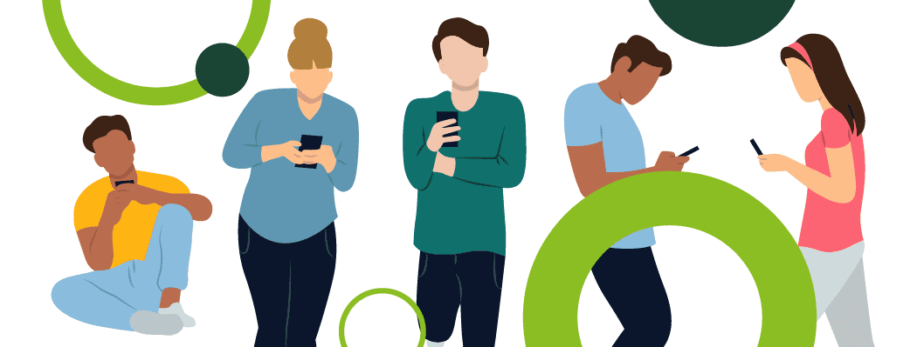

O Impacto dos Influenciadores na Saúde Mental dos Jovens
Uma pesquisa aprofundada sobre como os influenciadores digitais afetam o bem-estar psicológico dos adolescentes e jovens adultos na era das redes sociais.

Uma pesquisa aprofundada sobre como os influenciadores digitais afetam o bem-estar psicológico dos adolescentes e jovens adultos na era das redes sociais.
Análise científica dos efeitos dos influenciadores digitais na autoestima, ansiedade e comportamento dos jovens.
Compreendendo como o conteúdo digital influencia a formação da identidade e relações sociais dos adolescentes.
Propostas práticas para educação digital, uso consciente das redes sociais e suporte à saúde mental.
dos jovens relatam sentir ansiedade ao comparar suas vidas com influenciadores
sentem pressão para atingir padrões de beleza promovidos nas redes sociais
é o tempo médio que jovens passam consumindo conteúdo de influenciadores
Leia nossa pesquisa completa com metodologia, resultados e conclusões detalhadas.
Ler agoraAssista à nossa apresentação completa com depoimentos e análises visuais.
AssistirLista curada de filmes que abordam saúde mental e redes sociais.
ExplorarPropostas práticas para implementar na sua escola ou comunidade.
ConhecerOrientadora